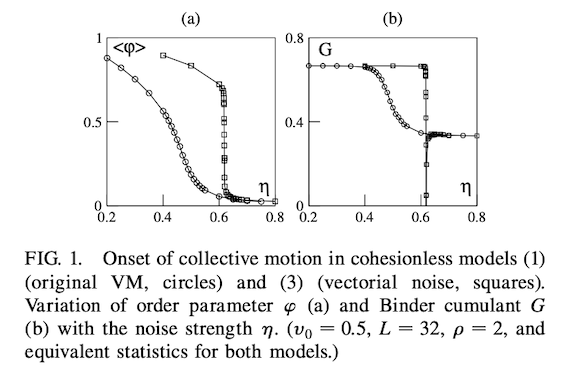
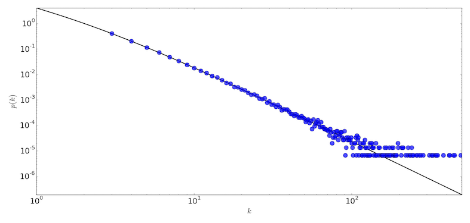
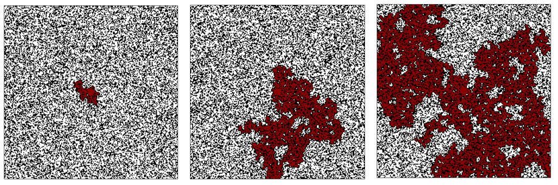
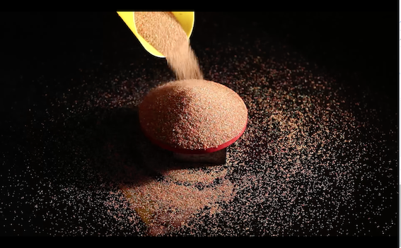
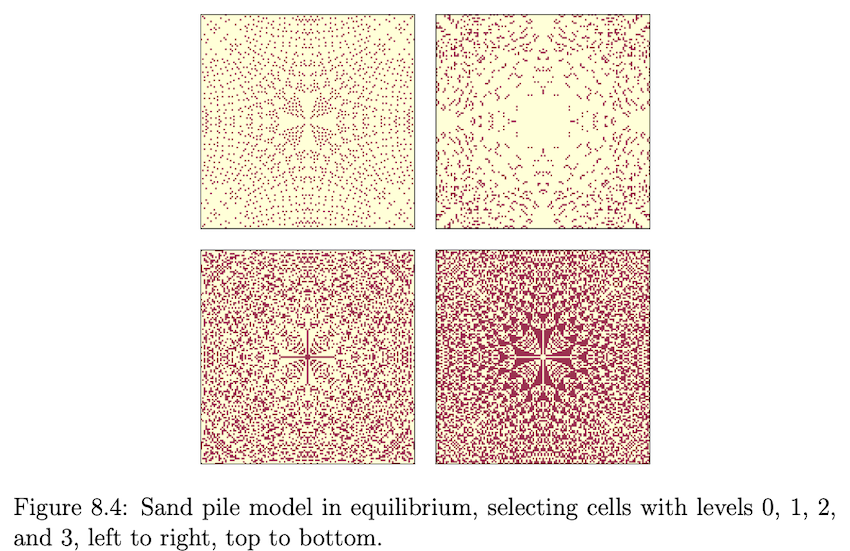

Week 8: Critical behaviour#
Last week we learnt about swarm optimisation with agent-based models.
Today, we’ll return to cellular automata as the modelling framework to explore criticality.
Motivation: Vicsek model#
We’ve already seen how to:
Define an order parameter for collective behaviour (the average velocity, \(v_a\)).
Sweep parameters (noise, \(\eta\) and density, \(\rho\)).
Average over ensembles.
These steps produce curves that suggest a phase transition, where collective behaviour changes abruptly:

Fig 2a of the original Vicsek model.
Fig. 2a of Vicsek, 1995#
Shows how the order parameter (the average velocity \(v_a\)) changes as the control parameter (noise strength \(\eta\)) is adjusted for different system sizes.
When noise is high, the system is disordered: particles move in all directions with equal probability. This state has rotational symmetry (if you rotated the system, it would look the same on average).
As noise decreases, particles align in a common direction.
The equations don’t prescribe which direction — the system chooses one itself. This is spontaneous symmetry breaking: no external field or leader dictates the choice, yet once chosen, the direction is stable.
But in statistical physics eyeballing a curve isn’t enough.
We need to extract scaling laws and critical exponents… and Vicsek was a Statistical Physicist afterall:

This is the abstract of the original Vicsek model.
Abstracts are short, and space is precious but the authors highlight the following details because they are fundamental to understanding the behaviour of the system:
The type of phase transition: continuous
The power law scaling: \((\eta_c-\eta)^\beta\)
The critical exponent: \(\beta\approx 0.45\)
Phase transition#
A phase transition is when a system undergoes a sudden transformation from one state to another (e.g. order to chaos).
These transformations matter because they produce qualitatively new patterns and behaviours.
They arise from interactions and feedback loops, and are marked by sharp shifts in key properties.
Phase transitions are often about ordering.
For example, water molecules are disordered in liquid, but ordered in ice. Between these states there is a transition that we often describe a phase transition using an order parameter.
Phase transitions are generally classified into two main types, distinguished by whether they exhibit smooth, continuous critical behaviour or abrupt, discontinuous jumps.
First-order phase transitions#
A discontinuous jump in the order parameter, \(\Phi\):

e.g.: melting of ice, boiling of water, and ferromagnetic/paramagnetic transitions.
Abrupt, discontinuous change: the system jumps sharply from one stable state to another.
Thermodynamic signature: discontinuity in the first derivative of the free energy (e.g. entropy, volume), usually with latent heat absorbed or released.
Second-order phase transitions#
A more gradual smooth change:

e.g.: superconducting transition in metals, ferromagnetic transition in iron, and the superfluid transition in helium.
Continuous transitions: change occurs smoothly, without abrupt jumps.
Thermodynamic signature: first derivatives of free energy remain continuous, but second derivatives (e.g. specific heat, susceptibility) may diverge or show discontinuities (kinks may be present in this curve). No latent heat is involved.
Beyond the critical point, the distinction between phases disappears and their properties converge.
The battle over the type of transition#
For many years researchers argued about the nature of this transition:

Fig from: Grégoire and Chaté’s analysis of the Onset of Collective and Cohesive Motion
Vicsek et al. (1995) argued it was continuous: as noise increased, order gradually declined towards disorder. Later work (notably Grégoire & Chaté, mid-2000s) found signs of discontinuous behaviour with abrupt switching and coexistence between ordered and disordered phases.
The difficulty lay in a few things:
finite-size effects: in small simulations the transition looked smooth, whereas larger particle numbers show sharper transitions and only with very large system sizes did the discontinuous nature become clear.
noise implementation: Vicsek used angular noise (random angle added to the average heading) but later work looked at vectorial noise (random vector added before normalisation). These two produce qualitatively different transitions: angular noise looks more continuous, vectorial noise more discontinuous.
This back-and-forth illustrates some key points:
science is alive and full of debate. One of the simplest models in complex systems sparked years of disagreement!
definitions and implementations matter and even simple models can hide complex truths that only reveal themselves when pushed to their limits.
phase transitions are subtle.
the order of the transition matters (continuous transitions are linked with critical phenomena, power laws, universality, etc., while discontinuous ones are more like “flips” between states).
It is on this last point that we will now focus - the reason for the debate in the first place.
Critical phenomena#
If a phase transition occurs then there is a critical point (aka tipping point) between the phases where dramatic changes in behaviour and properties emerge.
If a phase transition occurs, there is a critical boundary between phases.
For continuous (second-order) transitions, this boundary is marked by dramatic changes and unexpected critical phenomena characterised by:
Diverging correlations
Scale-invariance
Power laws everywhere.
First-order transitions themselves don’t have critical phenomena because the change is abrupt, with a finite correlation length and latent heat, so there is no diverging scale or scale-invariance.
And this is exactly why researchers were debating so much about whether the Vicsek model underwent a first- or second-order transition.
If it is second-order (continuous) then we get genuine critical phenomena. This makes the flocking transition analogous to classical statistical physics transitions (Ising, percolation, etc.), which is theoretically powerful.
If the transition is first-order (discontinuous) then none of that applies and we can’t meaningfully speak of “critical phenomena” in the usual sense. Instead we expect hysteresis, phase coexistence (e.g. ordered bands moving through disorder), and a jump in the order parameter.
Remember: Vicsek was pretty excited to have invented the moving analogue of the Heisenberg model! A first-order transition directly challenges the idea of flocking as a new universality class with critical behaviour.
Diverging correlations in:#
Space: correlation length diverges (everything becomes coupled).
Time: correlation time diverges (system takes forever to “forget” fluctuations).
This means there is no characteristic space/time scale.
Correlation length, \(\xi\)#
Tells us how far information about local fluctuations “propagates” across the system.
Away from criticality: \(\xi\) is finite and short
Correlations are local: disturbances don’t spread far, and distant regions fluctuate independently.
Correlations in space decay exponentially with the characteristic scale \(\xi\):
Near criticality: \(\xi\) grows large
Correlations between different parts of the system become increasingly long-ranged.
A small change in one part of the system can influence distant parts, leading to large-scale fluctuations (distant parts of the system begin to fluctuate together).
System behaviour starts to depend strongly on system size, because correlations are approaching the system boundary.
At criticality: \(\xi \to \infty\)
There is no single spatial scale — correlations exist across all distances.
The system becomes scale-free in space.
The exponential decay breaks down and is replaced by a power law:
Correlation time, \(\tau\)#
The temporal analogue of correlation length.
Tells us how long information about a fluctuation “persists” before the system forgets it.
Away from criticality: \(\tau\) is finite and short
Fluctuations die out quickly, the system relaxes fast, and successive measurements are nearly independent.
Correlations in time decay exponentially with the characteristic (time) scale \(\tau\)
where where larger \(\tau\) means slower decay (longer memory), and smaller \(\tau\) means faster decay (shorter memory).
Near criticality: \(\tau\) grows large
Fluctuations persist for a long time; the system responds sluggishly to external perturbations and the time it takes the system to return to equilibrium after disturbance is long.
This is critical slowing down.
At criticality: \(\tau\) diverges (\(\to \infty\)).
There is no single relaxation scale.
The system becomes scale-free in time: fluctuations exist on all timescales.
The exponential decay breaks down and is replaced by a power law (a scale-free decay):
Exponentials and Power laws: a very quick review#
Exponential decay (with characteristic timescale \(\tau\)):
This form has a built-in scale. On linear axes the curve looks flat at short times and drops rapidly to zero at long times. On a log–log plot, it bends — the “knee” marks the characteristic scale \(\tau\).
Power law decay (no characteristic timescale):
where:
\(y\) is the dependent variable,
\(x\) is the independent variable (often distance, time, or the deviation from criticality),
\(\alpha\) is the power law exponent (can be positive or negative).
Here the decay is scale-free. This is evident from the fact that power laws appear as straight lines on log–log plots, with the slope equal to the exponent, \(\alpha\).
becomes
Rescaling the time axis simply shifts the line without changing its slope. In other words, the decay has the same form at all scales. This is scale invariance. In general, scale invariance means patterns or statistical properties look the same at different scales. Formally, a function \(f(x)\) is scale invariant if for any constant \(c>0\):
Convince yourself that power laws are indeed scale free.
Take a power law:
If you rescale the argument \(x \mapsto c x\):
So it’s not exactly equal to \(f(x)\), but it has the same functional form, multiplied by a constant factor \(c^{-\alpha}\).
That counts as scale invariance because rescaling has just rescaled the vertical axis by a constant leaving the shape unchanged.
Contrast this with exponentials, where rescaling the axis changes the shape of the function (introduces a new timescale).
Power laws are heavy-tailed. This means that the part of the distribution representing extreme values decays more slowly than an exponential distribution.

This means that:
Extreme events are common: very large earthquakes, financial crashes, or highly connected network hubs occur far more often than in light-tailed distributions. If you wait long enough, a “big one” will eventually arrive.
Robust yet fragile: systems with heavy-tailed structure (e.g. scale-free networks) are resilient to random small failures but highly vulnerable to targeted attacks on hubs.
Statistical challenges: extreme values are so frequent that standard summary measures fail. In many cases:
The mean may diverge or be dominated by a few large events.
Averages are therefore not representative or meaningful. Nor are any other characteristic length of an observable property because the distribution remains the same regardless of the scale at which you observe it.
Special statistical tools (e.g. tail exponents, quantile methods, log-log plots) are needed for proper analysis.
Empirically, we will rarely see true power laws for all values but we will consider the system to be governed by a power law if it follows a power law in the tail (heavy tail).
e.g. Gutenberg-Richter Law relating the magnitude and number of earthquakes:
The critical system in this case is the Earth’s crust.

Power laws also appear outside strict thermodynamic critical points (in networks, biology, economics etc).
e.g. scale-free networks with power law degree distribution:

The noisy tail is something you’ll almost always see, on account of sampling limits (very few nodes at high degree) and real-world constraints (finite size, cutoffs, costs on connections).
We won’t go into much detail other than plotting on a log-log scale and fitting a straight line to estimate the scaling exponent. If you’re interested see Clauset’s SIAM review on Power-Law Distributions in Empirical Data:

Fig from Clauset’s review.
An Analogy#
Consider a stadium crowd responding to a clap.
How far the clap spreads is the correlation length (\(\xi\)).
How long it lingers is the correlation time (\(\tau\)).
Away from criticality:
\(\xi\) is local: one clap affects only nearby seats.
\(\tau\) is short: clap fades instantly.
Near criticality:
\(\xi\) is large: a wave sweeps across much of the stadium.
\(\tau\) is long: clap echoes and lingers, system is slow to settle.
At criticality:
\(\xi \to \infty\): Whole stadium moves as one; disturbance spreads everywhere.
\(\tau \to \infty\): No single settling time; ripples persist on all timescales.
And back to flocking#
Let’s now make sure we understand the meaning of the correlation length and time in terms of flocking…
Away from criticality:
In the ordered phase (low noise):
Length: the system self-organises into large, coherent flocks. The correlation length is essentially the size of a flock (particles within a flock are strongly aligned, but different flocks can move in different directions).
Time: fluctuations relax quickly; the correlation time is how long it takes a perturbation to return to the mean alignment (a few update steps).
In the disordered phase (high noise):
Length: the characteristic length is on the order of the interaction radius (the neighbourhood size each particle aligns with), because beyond that, orientations are uncorrelated.
Time: orientations randomise almost every step, so correlations vanish rapidly and the timescale is again short.
i.e. away from criticality, we can identify a typical length and there’s a well-defined, finite relaxation time.
At the critical point
Length: flocks of all sizes emerge and there is no typical flock size.
Time: fluctuations persist on all timescales and there is no typical relaxation time.
Vicsek and correlations#
Vicsek didn’t actually measure correlation functions directly.
Instead, they inferred the divergence of the correlation length from the finite-size scaling of the order parameter (Fig. 2) and the resulting scaling collapse (Fig. 3).
Later studies (by Vicsek & Czirók, and independently by Chate and by Toner–Tu) explicitly measured velocity correlations and confirmed the scaling picture.
Finite-size effects#
True criticality requires an infinite system such that the correlation length can diverge at the critical point.
In a finite system, however, the correlation length \(\xi\) cannot exceed the system size, \(L\).
In such cases, \(\xi\) grows only up to \(L\), near criticality the entire system becomes correlated, and observables depend on both the control parameter \(p\) and the system size \(L\).
We got a hint of this behaviour from doing parameter sweeps with different system sizes:
Fig. 2a: The transition sharpens with increasing \(N\). If correlations are long or short-ranged, size doesn’t matter much for the overall behaviour. In the transition region, dependence on \(N\) shows \(\xi\) is growing towards \(L\) and what looks like a wide band of criticality is really just finite-size rounding of an underlying sharp transition.
Finite-size scaling#
Many real-world systems (e.g. bird flocks, fish schools, power grids) are finite yet still show quasi-critical behaviour:
large fluctuations
approximate scale-free behaviour over a finite range (the transition “band” displays a range of intermediate order-parameter values)
Finite-size effects are deviations from true criticality caused by the limit imposed by \(L\). They matter because they let us infer critical behaviour from simulations or experiments where system size is necessarily finite.
Finite-size scaling turns this limitation into a tool: by studying how observables depend on \(L\), we can reconstruct the critical behaviour that would occur in the thermodynamic limit \(N\rightarrow \infty\).
Because the apparent critical noise \(\eta_c\) shifts slightly with system size \(L\), Vicsek accounted for this finite-size effect by plotting results in terms of \(\eta_c(L)\). This adjustment allows curves from different system sizes to collapse onto the same scaling law.
With this correction, we can formally test for critical behaviour. In the ordered phase, the order parameter is expected to vanish near the transition as a power law:
If this scaling holds, then a log–log plot of \(v_a\) versus the reduced distance from the critical noise should yield a straight line, with slope equal to the critical exponent \(\beta\).
Fig. 3a of Vicsek, 1995#
Shows the scaling collapse for the noise-driven transition:

Fig. 3a: Rescaling with critical exponents collapses the curves. Collapse is only possible if correlations diverge and system size sets the cutoff.
A straight line indicates that the order parameter \(v_a\) vanishes near the transition as a power law in the distance from critical noise. The slope gives the critical exponent \(\beta\approx 0.45\), which quantifies how quickly collective order disappears as the system approaches \(\eta_c\).
How this figure was produced#
\(\eta_c(L)\) is the pseudo-critical noise identified from Figure 2 for each system size \(L\). (this is done for e.g. using the steepest slope of or Binder cumulants, which we don’t cover explicitly in this unit).
Near the transition, the finite-size scaling ansatz is:
valid for \(\eta < \eta_c(L)\).
We can then define the scaled “distance from criticality”:
This is the x-axis in the figure.
When rescaled appropriately as distance from the critical noise \((\eta_c(L) - \eta)/\eta_c(L)\), the curves for different system sizes line up on a single straight line in log–log space. The slope (\(\beta \approx 0.45\)) is the critical exponent.
Note that in practice, you don’t assume the exponents and then magically see a collapse. Instead, you adjust \(\beta\) until the data for different system sizes fall on top of one another.
The values that give the best collapse are then reported as the measured critical exponents.
To summarise the process:
Hypothesise finite-size scaling form.
Rescale using trial exponents.
Adjust exponents until curves collapse.
Read off those exponents as the estimates.
How to interpret this figure#
The straight line in the log–log plot of
is the fingerprint of a power law. The order parameter doesn’t just vanish as noise increases; it follows
with the slope of the line giving the exponent \(\beta\). This slow, scale-free decline is the hallmark of criticality, very different from a sharp, first-order jump.
In practice, the neatest collapse is not seen right at \(\eta_c\), but slightly away from it. In a finite system, \(\xi\) cannot grow beyond \(L\), so extremely close to the transition the scaling form breaks down. Finite-size rounding and critical slowing down add further noise. The most reliable scaling region is the intermediate regime: close enough to feel criticality, but not so close that finite-size effects dominate.
Also note: here we only see the ordered side (\(\eta < \eta_c\)) because the order parameter vanishes to zero in the disordered phase. To probe scaling there, a different observable is needed (typically the susceptibility).
This is the standard recipe across statistical physics (Ising, percolation, etc.): order parameter on the ordered side, susceptibility on the disordered side, and correlation length across both.
Fig. 3b of Vicsek, 1995#
Shows the critical exponents beyond \(\beta\):

Fig 3b of the original Vicsek model.
They also measured other exponents (e.g. \(\delta \approx 0.35\)) from how \(v_a\) changes with density at fixed noise.
Shows that multiple exponents can characterise different aspects of criticality. Both are needed to fully describe the behaviour of the Vicsek model near the transition.
Critical exponents matter because they are often universal: the same numbers reappear in very different systems such as magnets, fluids, even flocking birds.
A familiar example: the Ising model#
To help reinforce what we have just covered, here is another system you are familiar with…
The Ising model is a canonical example of critical behaviour and phase transitions in statistical mechanics. It describes magnetic spins on a lattice that can point up or down.
Temperature, \(T\) is the control parameter with a critical value at \(T_c\).
Below \(T_c\): ferromagnetic (ordered) with spins tending to align, forming large domains.
Above \(T_c\): paramagnetic (disordered) with spins randomised by thermal fluctuations, with only short-range correlations.
At \(T_c\): correlations diverge, the system becomes scale-free, and critical phenomena appear.
Diverging Correlations#
Ordered phase (\(T < T_c\)) Spins align into domains. Correlations are finite but extended: spins inside a domain are highly correlated, but domains themselves have a characteristic size.
Critical point (\(T = T_c\)) Correlations become scale-free. The correlation length diverges (\(\xi \to \infty\)), and fluctuations occur on all length scales.
Note that in the Vicsek model, \(\eta\) is a control parameter, whereas here it is the critical exponent describing correlation decay at \(T_c\) (same symbol, very different meaning).
Disordered phase (\(T > T_c\)) Thermal fluctuations dominate. Correlations are short-ranged: a spin only influences its immediate neighbours.
Scale invariance (aka scale-free behaviour)#
Near \(T_c\), the system becomes scale-free: there is no typical size for correlated regions of spins.
Clusters of aligned spins appear on all length scales.
The distribution of cluster sizes follows a power law.
Large and small clusters look statistically similar — the system is self-similar across scales.
This is the consequence of the diverging correlation length, and its fingerprint is the emergence of power law behaviour.
Power law scaling and critical exponents#
Magnetisation (order parameter)
Measures the net alignment of spins.
Vanishes as \(T \to T_c\) from below.
2D Ising: \(\beta = \tfrac{1}{8}\).
3D Ising: \(\beta \approx 0.326\).
Magnetic susceptibility
Measures the response to an external magnetic field.
Diverges near \(T_c\).
2D Ising: \(\gamma = \tfrac{7}{4}\).
Correlation length
Measures the typical distance over which spins are correlated.
Diverges near \(T_c\).
2D Ising: \(\nu = 1\).
Percolation#
Percolation is another very prominent statistical physics model for criticality.
It is a process where fluid flows through a semi-porous material e.g. oil in rock formations, hydrogen gas in micropores or water through coffee grounds:
The barista’s secret Complexity Explorable.
Three different initialisations with the porosity, \(p=59.22\%<p_c\): 
The system’s response shows a sharp transition at a certain porosity. This is the percolation threshold, \(p_c\), which is a critical value:
Below \(p_c\) no percolation occurs
As the control parameter approaches the percolation threshold, \(p_c\), critical behaviours can be observed (diverging correlation, cluster size follows a power law, spanning cluster appears with universal fractal dimension)
Near \(p_c\) the system is very sensitive to small perturbation
Above \(p_c\) percolation occurs
Computing the percolation threshold, \(p_c\), can be tricky in general.
Some options:
Numerical experiments
Finite-size scaling theory is used to extrapolate the behaviour of an infinitely large system based on data from finite-sized systems
Theoretical mean-field models
Other theoretical approaches based on concepts from statistical physics, percolation theory, or graph theory.
In this unit we are primarily concerned with numerical experiments.
The image of a liquid seeping through a porous material is just one metaphor for percolation. Other applications for spatial contact processes:
spread of infectious disease in which the liquid becomes an infectious disease, empty sites are susceptible individuals and occupied sites are immune. In this case the percolation threshold is the epidemic threshold
Critical hexSIRSize: stochastic, spatial SIRS model. Pattern formation in an epidemic model near its critical point
dynamics of forest fires in which the liquid is a fire that expands across an area of vegetation and the porosity is equivalent to the density of trees
Critically inflammatory: A forest fire model. Spatial patterns, dynamics and criticality in forest fire dynamics
Critical points are usually unstable, so why do we see critical behaviour everywhere?
Self-organised criticality#
Ising, percolation and Vicsek models display criticality: they require an external control parameter (temperature, density, noise or density respectively).
The Vicsek model is self-organising because the global flocking emerges from simple local rules without any external field or central control. However, self-organisation alone does not guarantee that the system reaches a critical state.
Self-organised criticality (SOC) is the idea that some systems naturally evolve toward a critical state, without external tuning.
In the critical state these systems are poised on the edge of instability, allowing them to:
efficiently distribute energy or resources
maintain robustness and adaptability
SOC is a very active and influential research area because we still don’t have answers to some of the biggest questions:
how does self-organised criticality work? (we know there is usually a slow drive and highly non-linear interaction nut not much else is known…)
is it ubiquitous?
Sand piles#
Consider a pile of sand formed by dropping one sand grain on top of another over time. These piles form pyramid-like shapes of a certain slope.
If we continue to add sand grains then they slide down the slopes of the pyramid causing mini avalanches and the slope of the pyramid stays at the same angle. This is the angle of repose. A pyramid of sand with a larger slope than the angle of repose will create avalanches until the slope is again the angle of repose. The pyramid is in a critical state, and any departure from this state causes sequences of avalanches of different sizes to return to the critical state.

Video of sandpile here
Sand pile models#
Bak et al. proposed a sandpile model in 1987 to emulate this and demonstrate self-organised criticality. It is sometimes referred to as the Abelian sand pile model*.
It’s not meant to be a realistic model of a sand pile - it’s an abstraction, i.e. a simple example of a broad category of models for self-organised criticality.
The idea we aim to capture: how the addition of grains of sand to a ‘metastable state’ can trigger local motion causing the sand to rearrange itself via avalanches that span the entire pile.
In the self-organised critical state chain reactions can trigger avalanches of all sizes
“Critical” because a single local event can impact the entire system
“Self-organised” because the global state/pattern/dynamics has emerged spontaneously (no top-down control/invisible hand imposing order).
*The term Abelian comes from group theory, where a group is called Abelian if the order of operations does not matter (i.e., the group is commutative), i.e. the order in which you combine its elements (via a binary operation like addition or multiplication) does not affect the result. For example, in ordinary arithmetic, addition is commutative because:
In the sandpile model, regardless of the sequence of topplings, the final distribution of sand is the same, making the model an example of an Abelian system.
The commutative property in the Abelian Sandpile Model makes it a more tractable and mathematically interesting system to study.
With everything you have learnt so far... How will we model this?
Other seemingly non-negotiable quotes when one works in sandpiles:
Model details#
2D cellular automata
state of each cell, \(z(x,y)\), represents the slope of a part of the sand pile (or equivalently the number of grains)
boundary of grid: state is kept at 0 i.e. as sand is distributed outwards, excess will ‘fall off the edge’
dynamics:
randomly select cell and increment state by 1 (add sand to it)
if cell state exceeds a critical value of \(K_c\) then it ‘topples’ and redistributes sand to 4 neighbouring cells (-4 to the cell that topples and +1 to its von Neumann neighbours)
once all sites are stable again return to step 1
Note that we usually choose \(K_c=4\).
Perturbations#
Most of the time, dropping a single grain causes no cells to topple
Occasionally a single grain can cause an avalanche affecting a substantial fraction of the grid
To investigate this behaviour we initialise as:
option A (more common): all cells are initialised randomly with integer values \(z>K_c\), and the model is run until it stabilises. This state is then used as an initialisation
option B: build up a sand pile by adding a grains at a random lattice point \((x,y)\) and then running the dynamics
Properties of self-organising critical systems#
The idea of SOC is intuitive but definitions are typically vague and involve presence of properties. We will focus on a few of these properties:
Fractal Geometry - non-regular geometric shape containing the same degree of non-regularity on all scales, i.e. scale invariance
Heavy-tailed distributions - probability distribution whose tails are not exponentially bounded (a looser condition than the power law but intended to capture the same behaviour)
Pink noise - exhibited through variations in time where low frequency components have more power than high frequency components. The power for a particular frequency \(f\) will decay at a rate of \(1/f\) ‘Self-Organized Criticality: An Explanation of 1/f Noise’
Fractals?#
Binarised sand piles for \(z=\{0,1,2,3\}\):

Image from Allen Downey’s Think Complexity.
Q: It looks fractal… but is it?
A: To be sure we’ll need to estimate the fractal dimension
Box-counting dimension:
count number of cells with sand in it for varying box sizes
On a log-log scale, the cell counts form nearly straight lines, which indicates that we are measuring fractal dimension over a valid range of box sizes.

Image from Allen Downey’s Think Complexity.
It's certainly not a square with dimension equal to 2 but ask yourself what if it's random? What would you expect the box-counting dimension to tell you for a random distribution of sand?